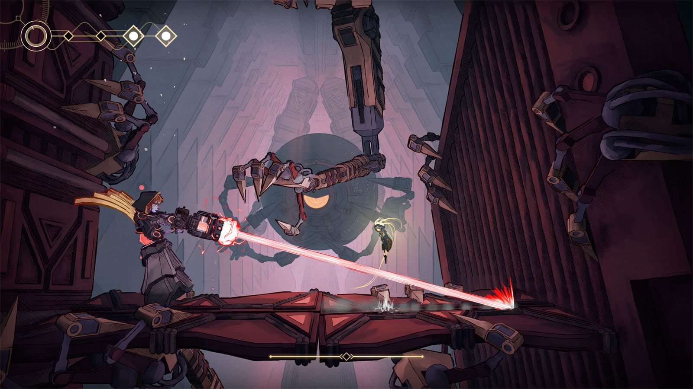

Metroidvania que descubrí en un Nintendo Direct en junio de 2024. Un metroidvania es un juego de exploración en dos dimensiones donde el mapa se va abriendo conforme consigues habilidades nuevas. Probé la demo que había en Steam y me llamó verdaderamente la atención por tener un estilo visual de lo más único y una atmósfera singular. Salió el pasado 20 de enero, así que no me lo pensé dos veces para lanzarme a probarlo.
Lo que más me gustaría destacar de MIO es su apartado artístico, que es ciertamente sublime. El juego está renderizado en 3D, pero tu personaje se mueve en dos dimensiones, lo que se conoce como 2,5D. Me encantan los juegos que hacen uso de esta técnica porque permite añadir capas de profundidad en el fondo y construir escenarios visualmente más impactantes y detallados. Además, las superficies y los fondos presentan un sombreado tipo acuarela de tonos pastel que le viene como anillo al dedo. Se aprecian detalles como manchas de pintura, líneas de lápiz visibles y bordes suavemente imperfectos a lo largo de todo el juego. Vaya, un deleite para los ojos.
Un combate sencillo que funciona mejor de lo que parece
Mecánicamente el juego es bastante sencillo. Te la pasas aporreando el cuadrado, haciendo dashes y lanzando parries durante los combates, poco más. Un parry, por cierto, bastante básico y totalmente opcional, nada que ver con Nine Sols. No hay distintas armas, ni formas, ni complejos árboles de habilidades, ni itemización. En ese sentido es todo muy básico, pero consigue que el combate sea desafiante y entretenido en la gran mayoría de los casos, especialmente contra los jefes, que tienen diseños y movimientos de lo más sorprendentes inspirándose en grandes referentes del género como Hollow Knight. En términos generales me ha parecido de dificultad media, aunque algunos jefes te lo puedan llegar a explicar de lo lindo.

El backtracking es su punto flojo
Si bien creo que el mapa y la distribución de los niveles están acertados, el tema del backtracking, es decir, volver sobre tus pasos a zonas ya visitadas, me parece un poco deficiente. En MIO es frecuente tener que reexplorar áreas por las que ya habías pasado, y he de decir que muchas veces suspiraba pensando en la pereza de volver caminando. Al principio apenas tienes viaje rápido y te va a tocar ir a pata. Luego el juego te deja poner marcadores, pero no son suficientes, porque con frecuencia vas a dudar de si la nueva habilidad que has conseguido te servirá para pasar por esa zona que antes no podías. Te entra la duda, te pateas el mapa para comprobarlo y, sorpresa, no sirve.
Mi mayor crítica es que, pese al sistema de amuletos que permite cierta personalización del personaje, el juego de cara al final se me ha vuelto un poco repetitivo. Las peleas llegaban a un punto en el que eran una mezcla de esquivar y dar ataques básicos, y ya. Es como que se pierde la magia del enfrentamiento. Quizás sea porque los movimientos en MIO son mucho más lentos y pausados que en otros metroidvanias. Viéndolo en retrospectiva, los combates son como un baile donde debes hacer una lectura perfecta de cuál va a ser el siguiente paso de tu pareja. Por eso pienso que, mientras el combate no es su punto fuerte, sí lo son en cierta manera el movimiento y el plataformeo. Ahí está lo verdaderamente satisfactorio del gameplay de MIO.
Una historia correcta con un doblaje inesperado
La historia está bien, pero nada espectacular ni que vaya a trascender. Manejas a un robot que se despierta en una nave espacial, el Buque, y descubres que las Perlas, la inteligencia artificial compuesta por distintas partes, han sido desactivadas. Tu misión consiste en encontrarlas, reactivarlas y averiguar qué ha ocurrido. Me ha sorprendido que el juego cuente con varias cinemáticas dentro del propio motor con voces y doblaje al español. La verdad es que es un aspecto muy top que no me esperaba en absoluto.
En conclusión, pese a no encontrarse en el hall of fame de los metroidvanias, MIO es una aportación notable al género. Su apartado artístico y su ambientación son lo que más destacaría por encima de todo. Como he dicho, de cara al final me acabó cansando un pelín, hasta el punto de no querer hacerme el final verdadero por simple pereza. Antes de jugar MIO te recomendaría otras entregas como la saga Hollow Knight, los Ori o el Prince of Persia, pero si ya los has jugado y te gusta muchísimo el género, entonces este probablemente lo debas tener en tu punto de mira.
Lo mejor
- Un apartado artístico sublime con sombreado tipo acuarela y escenarios 2,5D.
- Los jefes tienen diseños y movimientos muy trabajados.
- El movimiento y el plataformeo son lo más satisfactorio del conjunto.
Lo peor
- El backtracking es tedioso y el viaje rápido llega demasiado tarde.
- El combate se vuelve repetitivo en el tramo final.
- La historia cumple, pero no deja poso.
Desglose de puntuación
Veredicto
Un metroidvania notable sostenido por un apartado artístico sublime. El combate y el backtracking lo dejan lejos de los grandes del género, pero merece la pena si ya te los has jugado todos.